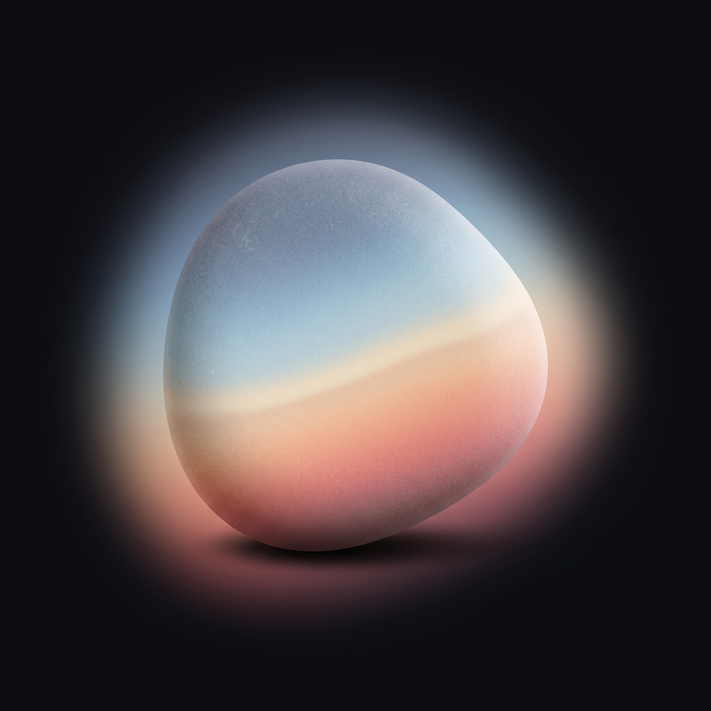

몽돌
순간의 색이
하루의 조약돌이 돼요
찍어 두기만 하면, 하루가 끝날 때
그날의 색이 조약돌 하나로 와요



찍을 땐,
색을 몰라요
잠금화면에서도, 늘 쓰던 카메라로도.
지나가는 순간만 붙잡아요


자고 일어나면,
어제가 와 있어요
그날 담은 색들이 조약돌 하나로 빚어져요


사진마다
한 단어가 남아요
그 순간의 시각과 동네, 그때 날씨까지
담은 날만,
조용히 쌓여요
매일 하지 않아도 괜찮아요

9:41

9:41
모아 보면,
한 달이 한 줌
받은 조약돌이 달마다 모여요